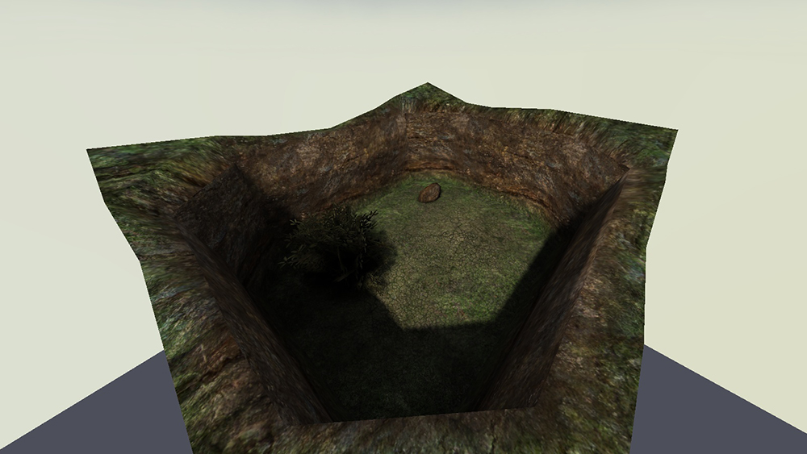
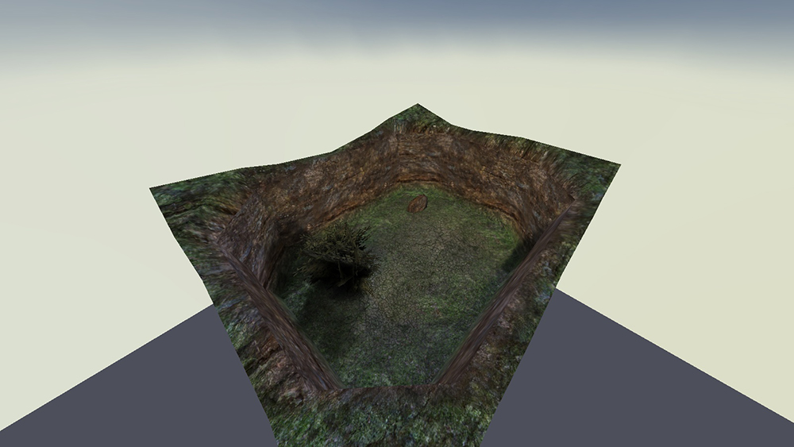
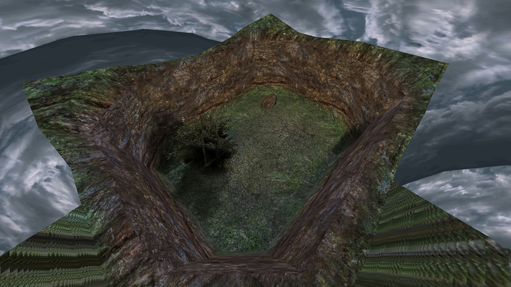
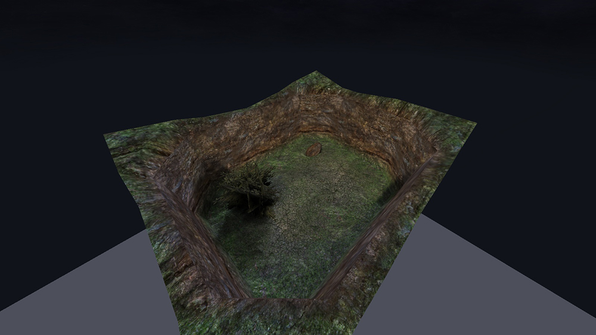
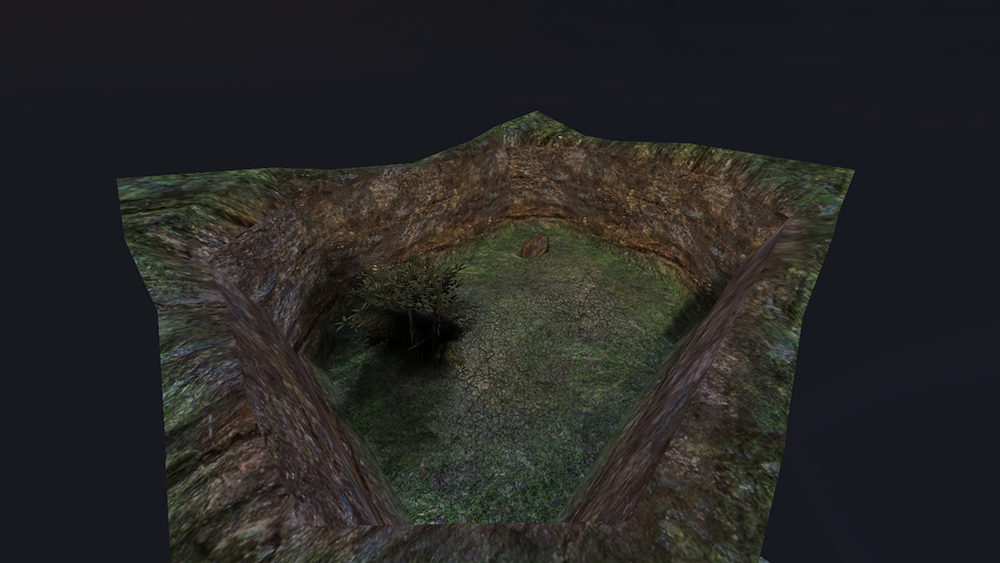
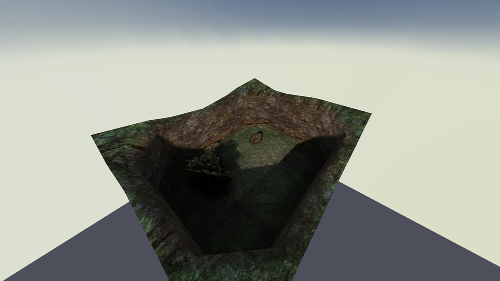
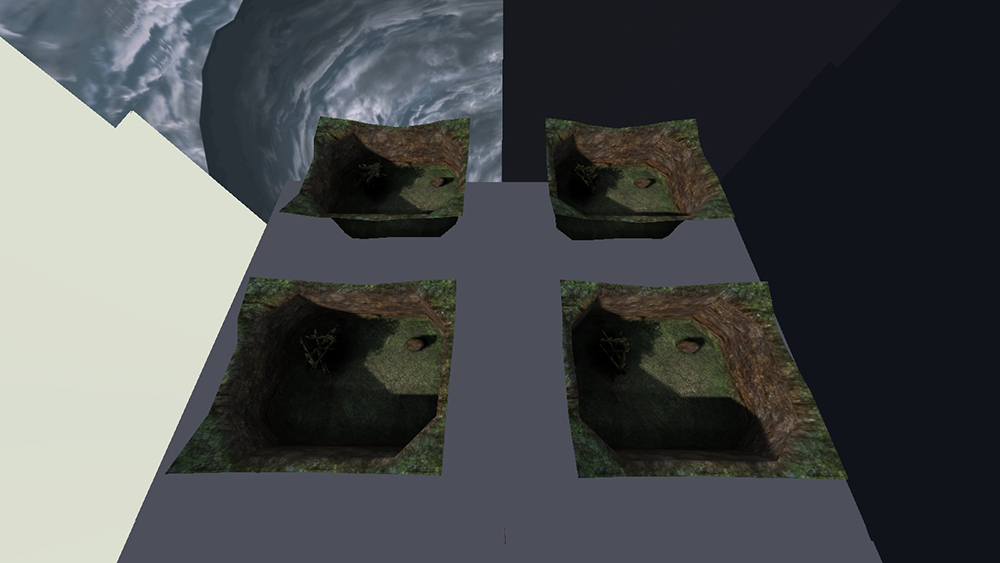

Using multiple skyboxes on a map
This tutorial will touch the issue on how Q3Map2 handles multiple skyboxes in a single map. If you've ever created a map where you have multiple skyboxes, you have probably faced the issue we are going to fix here: Q3Map2 doesn't know how to use mutliple skyboxes properly, making your lightmaps overly exposured and dull looking.
Illustrating the issue
I created this simple map to illustrate the issue. Here we see a properly lit map, with Oasis sky.

As you can see, the shadows look nice and crisp, and there is actually difference with light and dark. Now what happens when we have 4 identical rooms, each with different skies? I copied the room 3 times, changed the sky textures so that the map has a room with Oasis, Fueldump, Goldrush and Radar skies. Here is the same room.

As you can see, the lighting has changed a lot: Shadows are dull, and the map in general looks too bright. Also, here are the other rooms. Notice how the lighting is exactly same in every room, despite the different skies.



So what happened here?
Q3Map2 cannot apply different skylight conditions in different areas in the map, even when the rooms are sealed with structural brushes and every outer surface is caulk. What it does instead is add up all skyshader directives that produce light into the map, and combines them to light the whole map. You could probably modify Q3Map2 to properly support multiple skyboxes as the source code is available on GitHub, but that's something a bit more advanced, and we are not going to do it. Instead we are going to work around this issue by modifying the sky shaders used in our map.
Fixing the shaders
First, let's take a look at the 4 sky shader we used in our map (found in fueldump.shader, skies.shader and skies_sd.shader).
//Fueldump Sky
textures/fueldump/fueldumpsky
{
qer_editorimage textures/skies/fueldump_clouds.tga
q3map_lightrgb 0.8 0.9 1.0
q3map_skylight 85 3
q3map_sun 1 .95 .9 200 210 28
skyparms - 200 -
surfaceparm nodlight
surfaceparm noimpact
surfaceparm nolightmap
surfaceparm sky
{
map textures/skies/fueldump_clouds.tga
rgbGen identity
}
{
map textures/skies/fueldump_clouds.tga
blendfunc blend
rgbGen identity
tcMod scroll 0.0005 0.00
tcMod scale 2 1
}
}
//Goldrush Sky
textures/skies/sd_goldrush
{
qer_editorimage textures/skies/sky_8.tga
q3map_skylight 65 3
q3map_sun 0.3 0.3 0.45 60 35 45
nocompress
skyparms - 200 -
sunshader textures/skies_sd/full_moon2
surfaceparm noimpact
surfaceparm nolightmap
surfaceparm sky
skyparms textures/skies_sd/wurzburg_env/sky 512 -
{ fog off
map textures/skies_sd/goldrush_clouds.tga
tcMod scale 5 5
tcMod scroll 0.0015 -0.003
rgbGen identityLighting
}
{ fog off
map textures/skies/nightsky1.jpg
tcMod scale 10 10
blendfunc add
rgbGen identityLighting
}
{
fog off
clampmap textures/skies_sd/goldrush_mask.tga
blendFunc GL_SRC_ALPHA GL_ONE_MINUS_SRC_ALPHA
tcMod scale 0.956 0.956
tcMod transform 1 0 0 1 -1 -1
// rgbGen identityLighting
//rgbGen const ( 0.6 0.6 0.6 )
rgbGen const ( 0.4 0.4 0.4 )
}
}
//Radar Sky
textures/skies/sd_wurzburgsky
{
nocompress
qer_editorimage textures/skies/sky_8.tga
q3map_lightimage textures/skies/n_blue2.tga
q3map_nofog
q3map_globaltexture
q3map_lightsubdivide 256
q3map_sun 0.130 0.080 0.020 20 165 5
q3map_sun 0.281 0.288 0.370 80 35 40
q3map_sun 0.281 0.288 0.370 15 215 60
q3map_sun 0.281 0.288 0.370 10 35 50
q3map_sun 0.281 0.288 0.370 10 35 45
q3map_sun 0.281 0.288 0.370 10 35 35
q3map_sun 0.281 0.288 0.370 10 35 30
q3map_sun 0.281 0.288 0.370 10 40 40
q3map_sun 0.281 0.288 0.370 10 45 40
q3map_sun 0.281 0.288 0.370 10 30 40
q3map_sun 0.281 0.288 0.370 10 25 40
q3map_surfacelight 30
surfaceparm noimpact
surfaceparm nolightmap
surfaceparm sky
skyparms - 512 -
sunshader textures/skies_sd/small_moon
{
map textures/skies_sd/wurzburg_clouds.tga
tcMod scale 2.5 2.5
tcMod scroll 0.003 -0.0015
rgbGen identityLighting
}
{
map textures/skies_sd/ydnar_lightning.tga
blendFunc GL_SRC_ALPHA GL_ONE
rgbGen wave triangle -8 9 0 0.137
alphaGen wave noise -3 4 0 2.37
tcMod scale 3 3
tcMod scroll 0.003 -0.0015
}
{
clampmap textures/skies_sd/wurzburg_fogmask.tga
blendFunc GL_SRC_ALPHA GL_ONE_MINUS_SRC_ALPHA
tcMod scale 0.956 0.956
tcMod transform 1 0 0 1 -1 -1
rgbGen identitylighting
}
}
//Oasis Sky
textures/skies_sd/sd_siwasky
{
nocompress
qer_editorimage textures/skies_sd/nero_bluelight.tga
q3map_lightimage textures/skies_sd/siwa_clouds.tga
q3map_sun 0.75 0.70 0.6 135 199 49
q3map_skylight 75 3
sunshader textures/skies_sd/siwasunbright
surfaceparm noimpact
surfaceparm nolightmap
surfaceparm nodlight
surfaceparm sky
skyparms textures/skies_sd/wurzburg_env/sky 512 -
{
fog off
clampmap textures/skies_sd/siwa_mask.tga
tcMod scale 0.956 0.956
tcMod transform 1 0 0 1 -1 -1
rgbGen identityLighting
}
}If you are unfamiliar with shaders, you might want to take a moment to look at the Q3Map2 Shader Manual before proceeding.
To fix our issues with lighting, we need to modify the shaders so that there is only one sky in our map that produces light, while the rest are just pretty looking textures. To do this, we need to figure out exactly which directives in the shaders produce light. The shader manual helps us out here. These directives in sky shaders affect the lighting in our map (not all of them are used in these shaders obviously):
q3map_lightimage
q3map_lightmapFilterRadius
q3map_lightRGB
q3map_lightSubdivide
q3map_noFast
q3map_skylight
q3map_sun
q3map_sunExt
q3map_surfacelightIn general we don't need to worry that much about most of these, as they just modify the lighting instead of
producing it. The most commonly seen directives that actually produce light are q3map_skylight,
q3map_sun,
q3map_sunExt and q3map_surfacelight in conjunction with
q3map_lightSubdivide. To understand what these do, read
the descriptions of them in the shader manual.
Now that we know which directives we need to modify, it's time to start editing the shaders. First, we create a shader file that includes the skies used in our map. Next, we change the paths of the shaders so that we don't mess up the original sky shaders in the game. So for example, I renamed the shaders as following:
textures/skytut/fueldump
textures/skytut/goldrush
textures/skytut/radar
textures/skytut/oasisNow we need to comment out every light producing directive in every shader except for one, which is going to be the only shader that produces light in the map. Another option is to change the intensity values of the light-producing shaders to 0. I chose Fueldump sky shader to produce light into the map, and commented out every light producing directive in the rest of the shaders. Now, in the map with 4 identical rooms each with different sky shader, here is the room with Oasis sky.

And a picture showing the lighting in every room.

Now the rooms are all lit by the Fueldump sky, and we have proper difference between shadow and light again. The lighting is exactly same in every room, but they are not overly bright. As mentioned earlier, it is not possible to have different sky lighting conditions in different parts of the map, but with this method it's possible to use multiple skyboxes while still maintaining crisp shadows and keeping the brightness level of the map natural.
Design notes
- You might want to further modify the light producing directives to find lighting conditions that look good on every sky. I recommend reading the article about light emitting shaders in the shader manual.
- Sunshaders should be commented out as well, since they are global for the whole map so they appear even on skies that have no sunshader directive.
- Light produced by
q3map_sunandq3map_sunExtfalls off with angle, but not distance. - In general, it's recommended to use a combination of
q3map_sunExt,q3map_lightmapFilterRadiusandq3map_skylightto produce light on sky shader. Refer to the light emitting shaders article on shader manual mentioned earlier.
Tutorial by Aciz